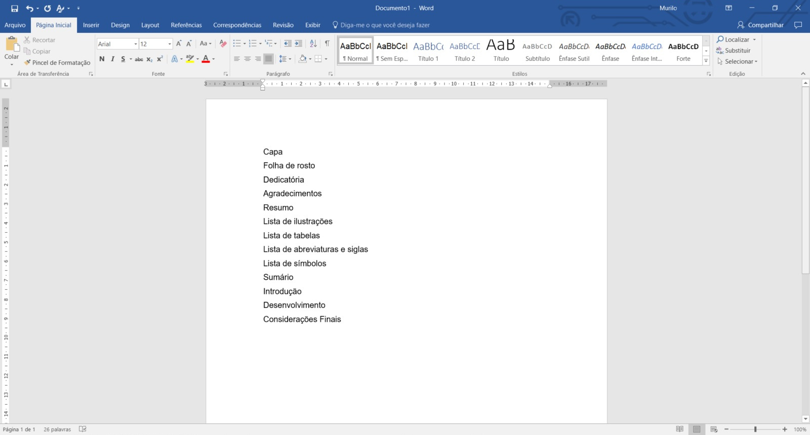

Aparece a caixa de diálogo como a Figura 8.
Aumente de 3 para o número desejado de níveis.
Como exemplo, foi configurado para 4 níveis.

Para adequar às exigências das normas de TCC que dispensam , as instruções a seguir
A página Sumário mostra como quebrar a seção criando uma numeração romana para elementos pré-textuais e numeração arábicos para elementos textuais.
As instruções a seguir mostram como criar um sumário de contagem contínua atendendo à norma para o curso de Serviço Social.
Inicialmente aparecem os elementos de cada página (pré-textuais e textuais).
Veja Figura 1.
Para que cada linha ocupe uma página, use a quebra de página.
Certifique-se que o cursor está posicionado no local que ocorrerá a quebra de página.
No menu superior, clique em Inserir.
Clique em Quebra de página.
Veja Figura 2.
Para visualizar todas as páginas, clique em Exibir e depois em Lado a lado.
Observação: o texto de cada página teve o estilo "Título 1" aplicado.
Veja a Figura 3.
Clique em Miniaturas.
Este recurso é interessante para "diagramar" seu texto. Desta forma é possível ver se a página ficou com muito espaço em branco e você pode mudar a posição de uma figura para ocupar aquele vazio, por exemplo.
Veja a Figura 4 que mostra uma linha em cada página.
Para voltar ao modo normal, clique em Miniaturas e em Vertical.
Veja Figura 5.
Posicione o cursor no lugar que deseja inserir o Sumário (antes da Introdução).
No menu superior, clique em Referências.
Clique em Sumário.
Clique na primeira opção Sumário automático 1.
O padrão do editor de texto Word é colocar até o nível 3 no sumário.
As intruções a seguir têm o propósito de aparecer a quantidade de níveis desejada para o sumário.
Clique em Personalizar sumário....
Aparece a caixa de diálogo como a Figura 8.
Aumente de 3 para o número desejado de níveis.
Como exemplo, foi configurado para 4 níveis.
Uma boa prática é atualizar o sumário após modificações.
A Figura 9 mostra que deve ser escolhido "Atualizar o índice inteiro".